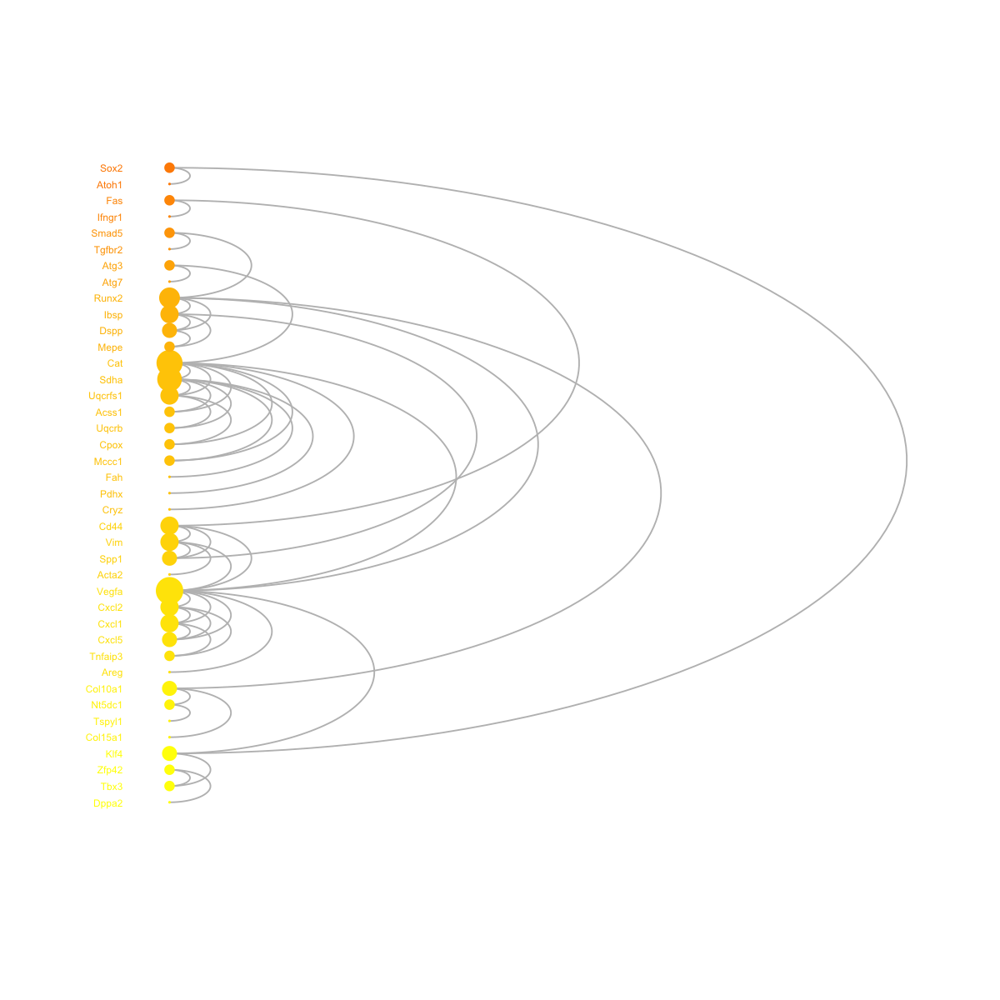
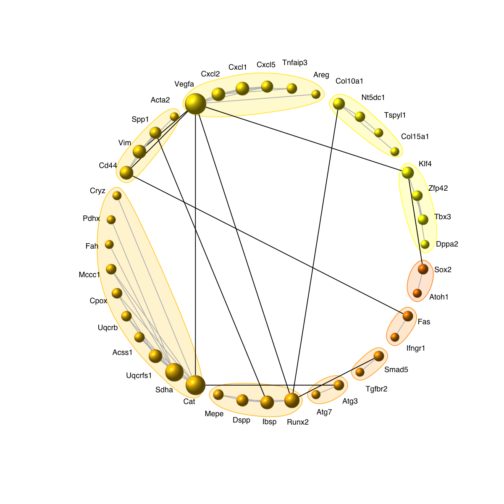
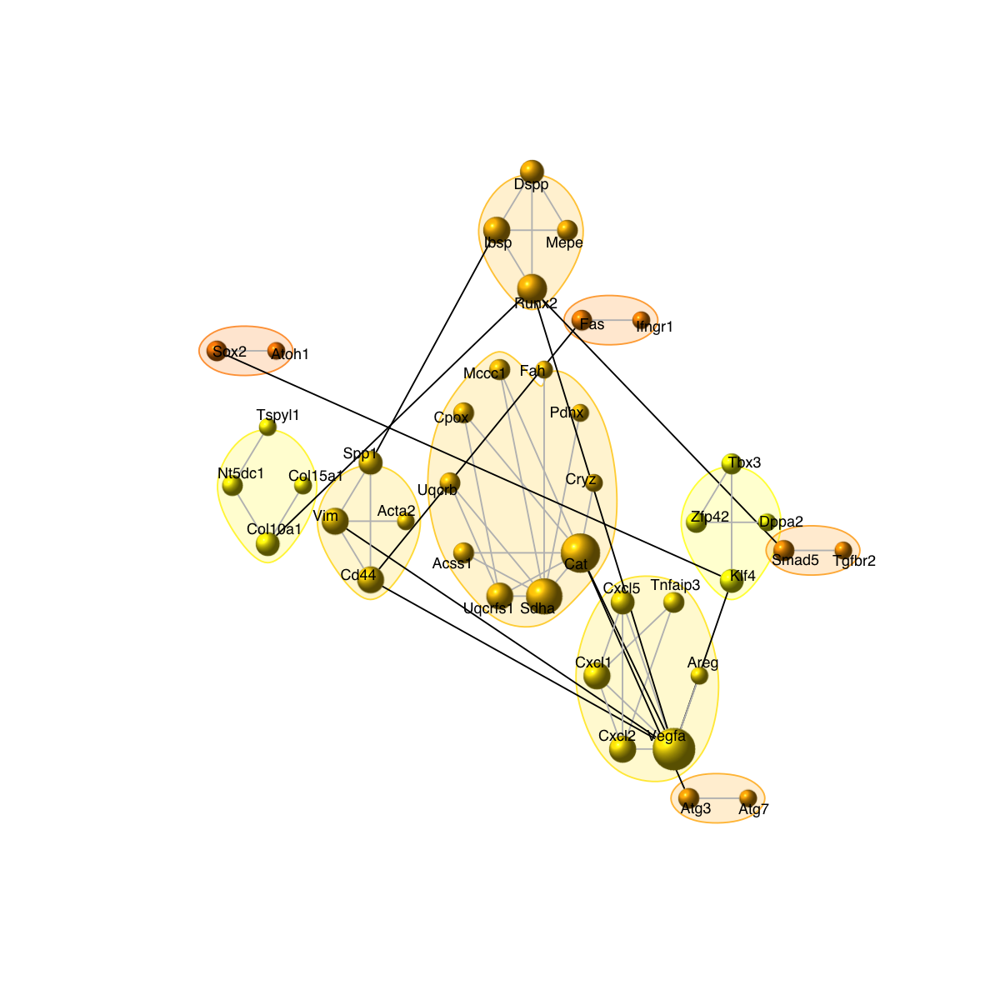
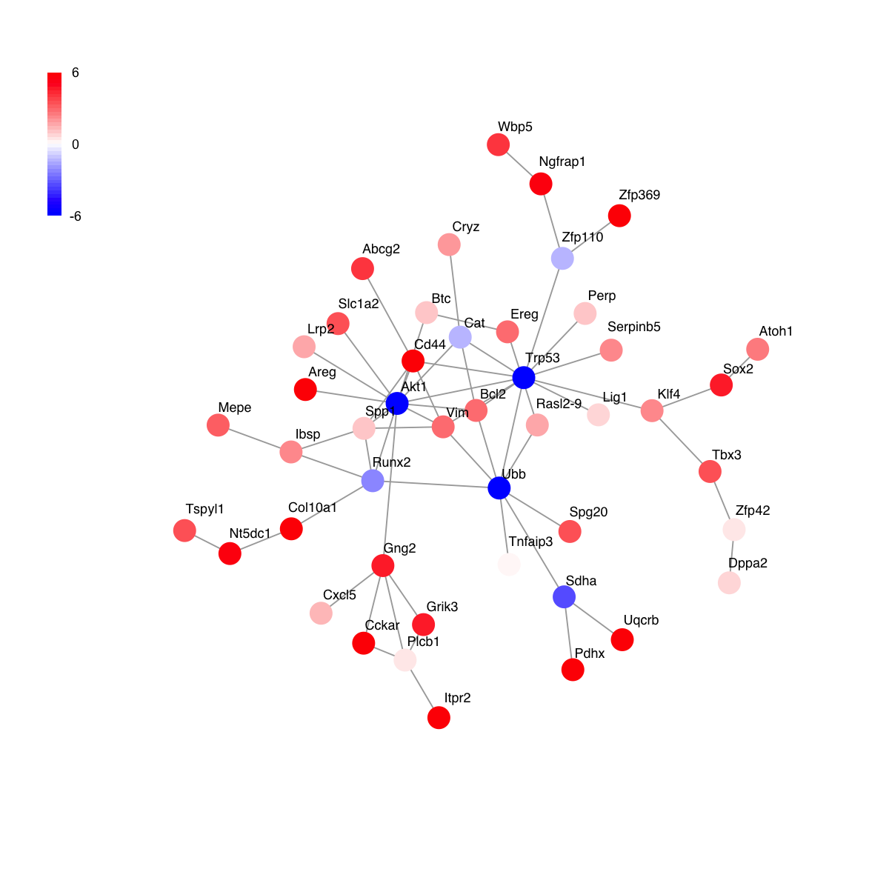
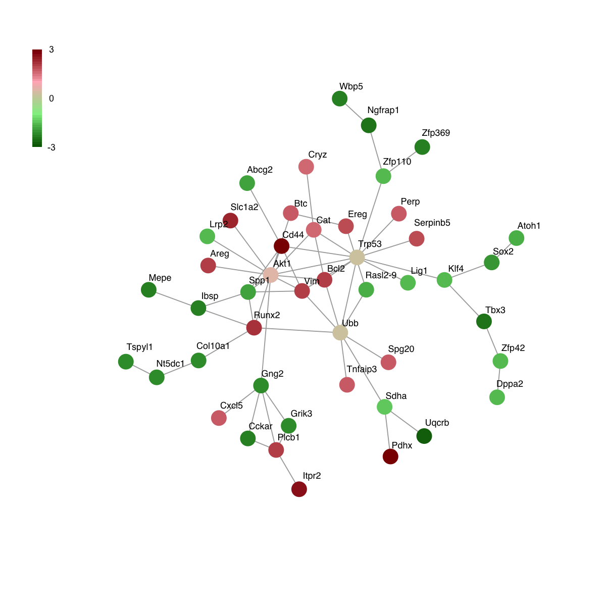
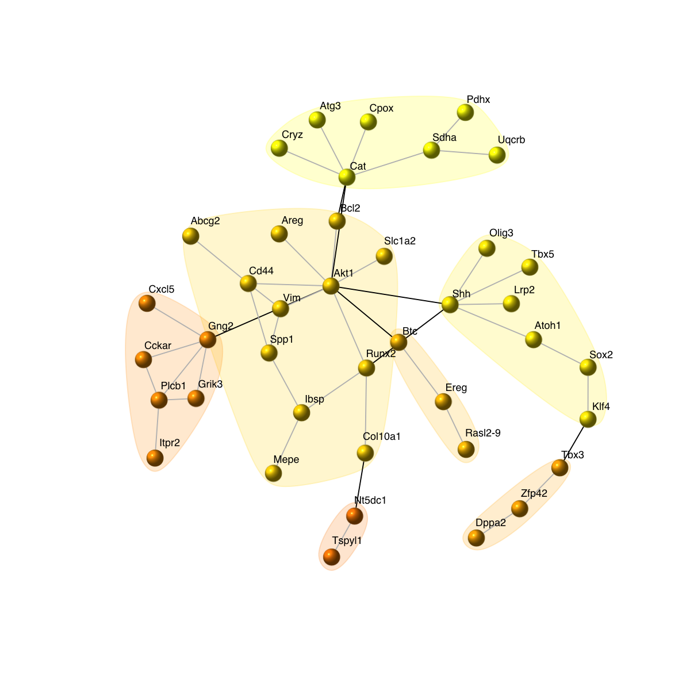
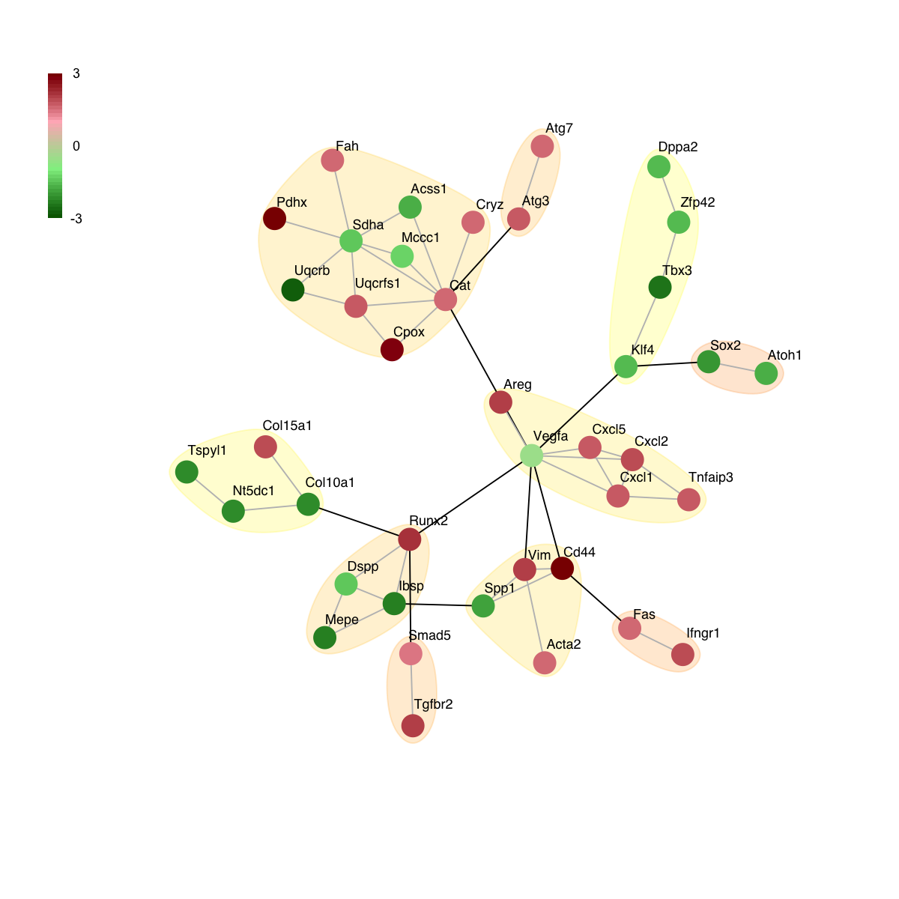
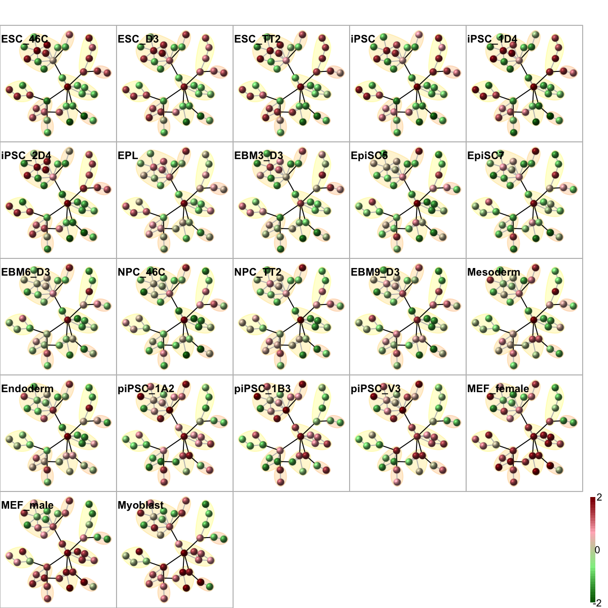
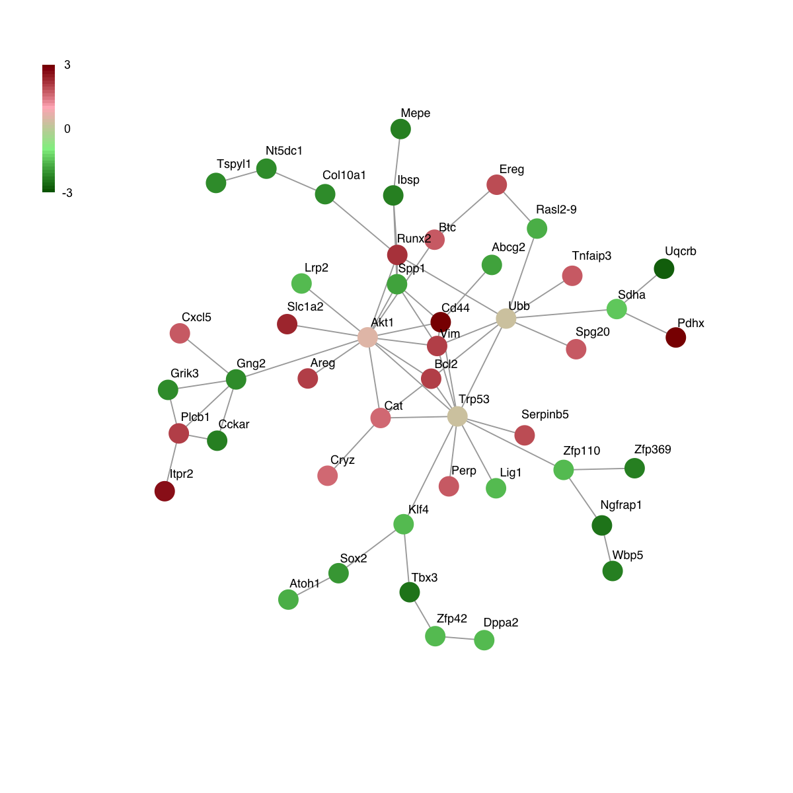
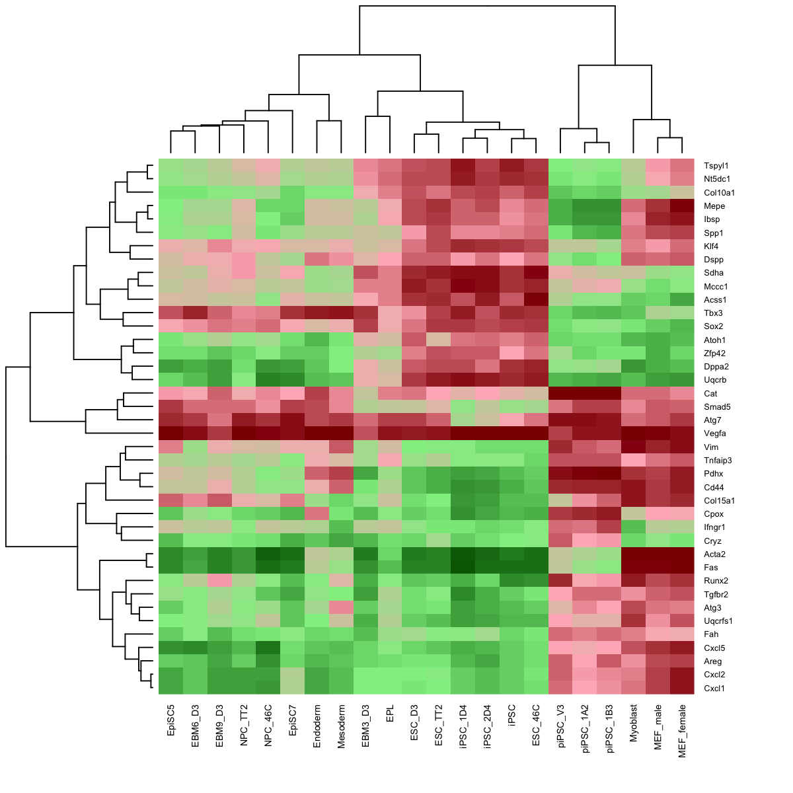

# This is a demo for multilayer omics dataset from Hiratani et al
#
# This multilay omics dataset (available from http://www.ncbi.nlm.nih.gov/pubmed/19952138) involves genome-wide replication-timing profiles of 22 cell lines from early mouse embryogenesis. These cell lines can be categorised into: 1) pluripotent cells, including ESCs (ESC_46C, ESC_D3 and ESC_TT2) and iPSCs (iPSC, iPSC_1D4 and iPSC_2D4); 2) partially-reprogrammed iPSCs (piPSC_1A2, piPSC_1B3 and piPSC_V3); 3) early epiblast (EPL and EMB3_D3); 4) late epiblast (EpiSC5 and EpiSC7); 5) Ectoderm (EBM6_D3, EBM9_D3, NPC_46C and NPC_TT2); 6) Mesoderm and Endoderm; and 7) late Mesoderm (Myoblast, MEF_female and MEF_male).
#
# The dataset is extracted for RefSeq gene TSS locations, including:
## RT: a replication timing matrix of 17,292 genes X 22 samples;
## CpG: a matrix of 17,292 genes X 1 containing gene additional information on promoter CpG classification (see http://www.ncbi.nlm.nih.gov/pubmed/17603471), with '1' for HCP (high CpG density promoters), '-1' for LCP (low CpG density promoters), '0' for ICP (intermediate CpG density promoters), and 'NA' for unclassified;
## EX: an expression matrix of 17,292 genes X 8 samples, and samples include pluripotent cells (ESC_D3); early epiblast (EMB3_D3); late epiblast (EpiSC7); Ectoderm (EBM6_D3 and EBM9_D3); Mesoderm and Endoderm.
###############################################################################
library(dnet)
# Load or install packages specifically used in this demo
if(!require(affy)){
install.packages("affy",repos="http://www.stats.bris.ac.uk/R")
library(affy)
}
if(!require(limma)){
install.packages("limma",repos="http://www.stats.bris.ac.uk/R")
library(limma)
}
# This multilayer omics dataset involves the information on DNA replication timing, promoter CpG classification and gene expression. It consists of digitised replication timing, promoter CpG status and expression levels of 17,292 genes in a variety of samples.
load(url("http://dnet.r-forge.r-project.org/data/Hiratani_TableS1.RData"))
ls() # you should see three variables: 'RT', 'CpG' and 'EX'
[1] "CpG" "EX" "RT"
# Entrez Gene information for the mouse
load(url("http://dnet.r-forge.r-project.org/data/org.Mm.eg.RData"))
gene_info <- org.Mm.eg$gene_info
gene_info[1:2,]
GeneID Symbol description chromosome map_location
11287 11287 Pzp pregnancy zone protein 6 6 F1-G3|6
11298 11298 Aanat arylalkylamine N-acetyltransferase 11 11 E2|11 8
Synonyms
11287 A1m|A2m|AI893533|MAM
11298 AA-NAT|Nat-2|Nat4|Snat
dbXrefs
11287 MGI:87854|Ensembl:ENSMUSG00000030359|Vega:OTTMUSG00000022212
11298 MGI:1328365|Ensembl:ENSMUSG00000020804|Vega:OTTMUSG00000003949
# create the 'eset' object for RT
group <- c(rep("ESC",3), rep("iPSC",3), rep("eEpiblast",2), rep("lEpiblast",2), rep("Ectoderm",4), rep("Mesoderm",1), rep("Endoderm",1), rep("piPSC",3), rep("Myoblast",3))
pdata <- data.frame(group=group, row.names=colnames(RT))
esetGene <- new("ExpressionSet", exprs=as.matrix(RT), phenoData=as(pdata,"AnnotatedDataFrame"))
esetGene
ExpressionSet (storageMode: lockedEnvironment)
assayData: 17292 features, 22 samples
element names: exprs
protocolData: none
phenoData
sampleNames: ESC_46C ESC_D3 ... Myoblast (22 total)
varLabels: group
varMetadata: labelDescription
featureData: none
experimentData: use 'experimentData(object)'
Annotation:
# An igraph object that contains a functional protein association network in mouse. The network is extracted from the STRING database (version 9.0.5). Only those associations with medium confidence (score>=0.4) are retained.
load(url("http://dnet.r-forge.r-project.org/data/org.Mm.string.RData"))
org.Mm.string
IGRAPH UN-- 18296 391653 --
+ attr: name (v/c), seqid (v/c), geneid (v/n), symbol (v/c),
description (v/c), neighborhood_score (e/n), fusion_score (e/n),
cooccurence_score (e/n), coexpression_score (e/n), experimental_score
(e/n), database_score (e/n), textmining_score (e/n), combined_score
(e/n)
# extract network that only contains genes in esetGene
ind <- match(V(org.Mm.string)$symbol, rownames(esetGene))
## for extracted expression
esetGeneSub <- esetGene[ind[!is.na(ind)],]
esetGeneSub
ExpressionSet (storageMode: lockedEnvironment)
assayData: 9502 features, 22 samples
element names: exprs
protocolData: none
phenoData
sampleNames: ESC_46C ESC_D3 ... Myoblast (22 total)
varLabels: group
varMetadata: labelDescription
featureData: none
experimentData: use 'experimentData(object)'
Annotation:
## for extracted graph
nodes_mapped <- V(org.Mm.string)$name[!is.na(ind)]
network <- dNetInduce(g=org.Mm.string, nodes_query=nodes_mapped, knn=0, remove.loops=T, largest.comp=T)
V(network)$name <- V(network)$symbol
network
IGRAPH UN-- 9046 155986 --
+ attr: name (v/c), seqid (v/c), geneid (v/n), symbol (v/c),
description (v/c)
# 1) preparation of node p-values
## define the design matrix in a order manner
all <- as.vector(pData(esetGene)$group)
level <- levels(factor(all))
index_level <- sapply(level, function(x) which(all==x)[1])
level_sorted <- all[sort(index_level, decreasing=F)]
design <- sapply(level_sorted, function(x) as.numeric(all==x)) # Convert a factor column to multiple boolean columns
## a linear model is fitted for every gene by the function lmFit
fit <- lmFit(exprs(esetGene), design)
## define a contrast matrix
contrasts <- dContrast(level_sorted, contrast.type="pairwise")
contrast.matrix <- makeContrasts(contrasts=contrasts$each, levels=design)
colnames(contrast.matrix) <- contrasts$name
## computes moderated t-statistics and log-odds of differential expression by empirical Bayes shrinkage of the standard errors towards a common value
fit2 <- contrasts.fit(fit, contrast.matrix)
fit2 <- eBayes(fit2)
## for p-value
pvals <- as.matrix(fit2$p.value)
# for adjusted p-value
adjpvals <- sapply(1:ncol(pvals),function(x) {
p.adjust(pvals[,x], method="BH")
})
colnames(adjpvals) <- colnames(pvals)
## num of differentially expressed genes
apply(adjpvals<1e-2, 2, sum)
iPSC_ESC eEpiblast_ESC lEpiblast_ESC Ectoderm_ESC
0 102 1134 2120
Mesoderm_ESC Endoderm_ESC piPSC_ESC Myoblast_ESC
1050 959 2612 4171
eEpiblast_iPSC lEpiblast_iPSC Ectoderm_iPSC Mesoderm_iPSC
116 1224 2660 1147
Endoderm_iPSC piPSC_iPSC Myoblast_iPSC lEpiblast_eEpiblast
1167 2527 4862 91
Ectoderm_eEpiblast Mesoderm_eEpiblast Endoderm_eEpiblast piPSC_eEpiblast
563 95 106 1340
Myoblast_eEpiblast Ectoderm_lEpiblast Mesoderm_lEpiblast Endoderm_lEpiblast
2858 112 188 254
piPSC_lEpiblast Myoblast_lEpiblast Mesoderm_Ectoderm Endoderm_Ectoderm
1119 2736 118 346
piPSC_Ectoderm Myoblast_Ectoderm Endoderm_Mesoderm piPSC_Mesoderm
2373 2929 3 970
Myoblast_Mesoderm piPSC_Endoderm Myoblast_Endoderm Myoblast_piPSC
1362 1146 1773 2986
## only for the comparisons of piPSC against iPSC
my_contrast <- "piPSC_iPSC"
## get the p-values and calculate the scores thereupon
pval <- pvals[,my_contrast]
#pval <- dPvalAggregate(pvals, method="orderStatistic", order=ncol(pvals))
#pval <- dPvalAggregate(pvals, method="fishers", order=ncol(pvals))
# 2) identification of module
g <- dNetPipeline(g=network, pval=pval, nsize=40)
Start at 2014-03-17 17:14:06
First, fit the p-value distribution under beta-uniform mixture model...
A total of p-values: 17292
Maximum Log-Likelihood: 17957.4
Mixture parameter (lambda): 0.412
Shape parameter (a): 0.218
Second, determine FDR threshold...
Via constraint on the size of subnetwork to be identified (40 nodes)
Scanning FDR at rough stage...
FDR: 1.00e-15, corresponding to the network size (0 nodes)
FDR: 1.00e-14, corresponding to the network size (0 nodes)
FDR: 1.00e-13, corresponding to the network size (0 nodes)
FDR: 1.00e-12, corresponding to the network size (0 nodes)
FDR: 1.00e-11, corresponding to the network size (0 nodes)
FDR: 1.00e-10, corresponding to the network size (1 nodes)
FDR: 1.00e-09, corresponding to the network size (1 nodes)
FDR: 1.00e-08, corresponding to the network size (2 nodes)
FDR: 1.00e-07, corresponding to the network size (8 nodes)
FDR: 1.00e-06, corresponding to the network size (34 nodes)
FDR: 1.00e-05, corresponding to the network size (114 nodes)
Scanning FDR at finetune stage...
FDR: 1.50e-06, corresponding to the network size (38 nodes)
FDR: 2.00e-06, corresponding to the network size (40 nodes)
FDR threshold: 2.00e-06
Third, calculate the scores according to the fitted BUM and FDR threshold (if any)...
Amongst 17292 scores, there are 285 positives.
Finally, find the subnetwork from the input network with 9046 nodes and 155986 edges...
Size of the module: 40 nodes and 53 edges
Finish at 2014-03-17 17:17:58
Runtime in total is: 232 secs
glayout <- layout.fruchterman.reingold(g)
# 3) color nodes according to communities identified via a spin-glass model and simulated annealing
#com <- spinglass.community(g, spins=3)
com <- walktrap.community(g, modularity=T)
com$csize <- sapply(1:length(com),function(x) sum(com$membership==x))
vgroups <- com$membership
colormap <- "yellow-darkorange"
palette.name <- visColormap(colormap=colormap)
mcolors <- palette.name(length(com))
vcolors <- mcolors[vgroups]
com$significance <- dCommSignif(g, com)
# 4) size nodes according to degrees
vdegrees <- igraph::degree(g)
# 5) sort nodes: first by communities and then degrees
tmp <- data.frame(ind=1:vcount(g), vgroups, vdegrees)
ordering <- tmp[order(vgroups,vdegrees),]$ind
# 6) visualise graph using 1-dimensional arc diagram
visNetArc(g, ordering=ordering, labels=V(g)$geneSymbol, vertex.label.color=vcolors, vertex.color=vcolors, vertex.frame.color=vcolors, vertex.size=log(vdegrees)+0.1, vertex.label.cex=0.4)

# 7) visualise graph using circle diagram
# 7a) drawn into a single circle
visNetCircle(g=g, com=com, ordering=ordering, colormap=colormap, vertex.label=V(g)$symbol, vertex.size=igraph::degree(g)+5, vertex.label.color="black", vertex.label.cex=0.6, vertex.label.dist=0.75, vertex.shape="sphere", edge.color.within="grey", edge.color.crossing="black", edge.width=1, edge.lty=1, mark.shape=1, mark.expand=10)

# 7b) drawn into multiple circles
visNetCircle(g=g, com=com, circles="multiple", ordering=ordering, colormap=colormap, vertex.label=V(g)$symbol, vertex.size=igraph::degree(g)+5, vertex.label.color="black", vertex.label.cex=0.6, vertex.label.dist=0.25, vertex.shape="sphere", edge.color.within="grey", edge.color.crossing="black", edge.width=1, edge.lty=1, mark.shape=1, mark.expand=10)

# 8) as comparison, also visualise graph on 2-dimensional layout
mark.groups <- communities(com)
mark.col <- visColoralpha(mcolors, alpha=0.2)
mark.border <- visColoralpha(mcolors, alpha=0.2)
edge.color <- c("grey", "black")[crossing(com,g)+1]
visNet(g, glayout=glayout, vertex.label=V(g)$geneSymbol, vertex.color=vcolors, vertex.frame.color=vcolors, vertex.shape="sphere", mark.groups=mark.groups, mark.col=mark.col, mark.border=mark.border, mark.shape=1, mark.expand=10, edge.color=edge.color)

legend_name <- paste("C",1:length(mcolors)," (n=",com$csize,", pval=",signif(com$significance,digits=2),")",sep='')
legend("bottomleft", legend=legend_name, fill=mcolors, bty="n", cex=0.6)

# 9) color by score and FC
# colored by score
visNet(g, glayout=glayout, pattern=V(g)$score, zlim=c(-1*ceiling(max(abs(V(g)$score))),ceiling(max(abs(V(g)$score)))), vertex.shape="circle", mark.groups=mark.groups, mark.col=mark.col, mark.border=mark.border, mark.shape=1, mark.expand=10, edge.color=edge.color)

# colored by FC
colormap <- "darkgreen-lightgreen-lightpink-darkred"
logFC <- fit2$coefficients[V(g)$name,my_contrast]
visNet(g, glayout=glayout, pattern=logFC, colormap=colormap, vertex.shape="circle", mark.groups=mark.groups, mark.col=mark.col, mark.border=mark.border, mark.shape=1, mark.expand=10, edge.color=edge.color)

# 10) color by additional data
data <- exprs(esetGene)[V(g)$name,]
visNetMul(g=g, data=data, height=ceiling(sqrt(ncol(data)))*2, newpage=T,glayout=glayout,colormap=colormap,vertex.label=NA,vertex.shape="sphere", vertex.size=16,mtext.cex=0.7,border.color="888888", mark.groups=mark.groups, mark.col=mark.col, mark.border=mark.border, mark.shape=1, mark.expand=10, edge.color=edge.color)

# 11) color by additional data (be reordered)
sReorder <- dNetReorder(g, data, feature="edge", node.normalise="degree", amplifier=3, metric="none")
Start at 2014-03-17 17:19:20
First, define topology of a map grid...
Second, initialise the codebook matrix given a topology and input data...
Third, get training at the rough stage...
Fourth, get training at the finetune stage...
Next, identify the best-matching hexagon/rectangle for the input data...
Finally, append the response data (hits and mqe) into the sMap object...
Below are the summaries of the training results:
dimension of input data: 22x53
xy-dimension of map grid: xdim=9, ydim=9
grid lattice: rect
grid shape: sheet
dimension of grid coord: 81x2
initialisation method: linear
dimension of codebook matrix: 81x53
mean quantization error: 0.517422290798154
Below are the details of trainology:
training algorithm: sequential
alpha type: invert
training neighborhood kernel: gaussian
trainlength (x input data length): 37 at rough stage; 148 at finetune stage
radius (at rough stage): from 2 to 1
radius (at finetune stage): from 1 to 1
End at 2014-03-17 17:19:26
Runtime in total is: 6 secs
visNetReorder(g=g, data=data, sReorder=sReorder, height=ceiling(sqrt(ncol(data)))*2, newpage=T, glayout=glayout, colormap=colormap, vertex.label=NA,vertex.shape="sphere", vertex.size=16,mtext.cex=0.4,border.color="888888", mark.groups=mark.groups, mark.col=mark.col, mark.border=NA, mark.shape=1, mark.expand=10, edge.color=edge.color)

# 12) heatmap of subnetwork
data[data < -2] <- -2
data[data > 2] <- 2
heatmap(as.matrix(data),col=visColormap(colormap=colormap)(64),zlim=c(-2,2), scale="none", cexRow=0.2+0.5/log10(nrow(data)), cexCol=0.2+0.5/log10(ncol(data)), Rowv=NULL,Colv=NULL)

hmap <- data.frame(Symbol=rownames(data), data)
write.table(hmap, file=paste(my_contrast,".txt", sep=""), quote=F, row.names=F,col.names=T,sep="\t")
# 13) Write the subnetwork into a SIF-formatted file (Simple Interaction File)
sif <- data.frame(source=get.edgelist(g)[,1], type="interaction", target=get.edgelist(g)[,2])
write.table(sif, file=paste(my_contrast,".sif", sep=""), quote=F, row.names=F,col.names=F,sep="\t")
){kind=link}
){kind=link}
){kind=link}
){kind=link}
){kind=link}
){kind=link}
){kind=link}
){kind=link}
){kind=link}
){kind=link}